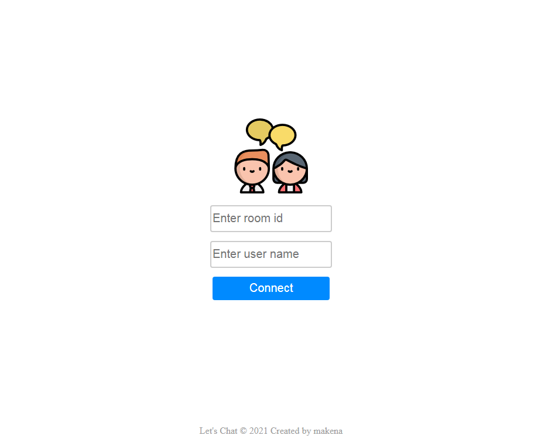
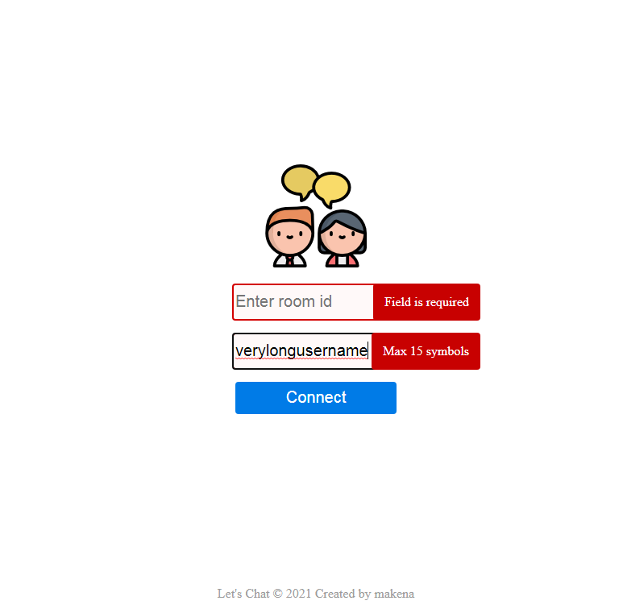
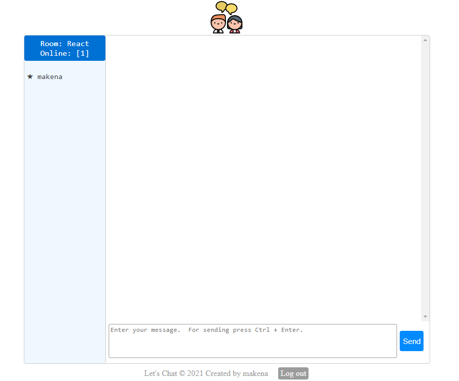
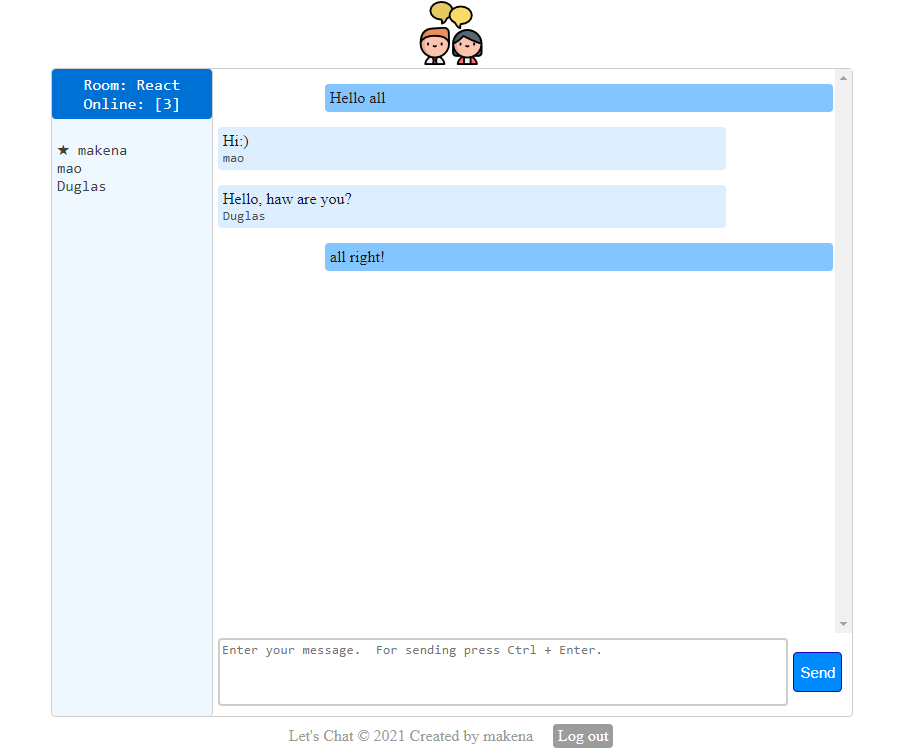
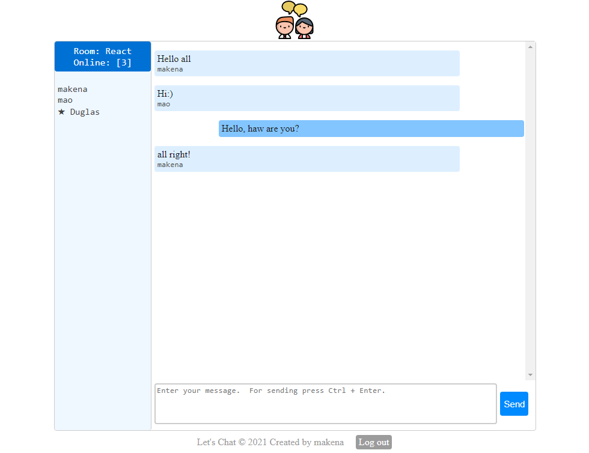

[#] Допилил чат! Завтра закину на GitHub, а сегодня только скриншоты.
Скриншоты Let's Chat





[#] Посмотрел #02 Night Show by Dimych 2020-09-16
[#] Ссылки на видео по которым был реализован Backend, Frontend реализовал с подключением доп. библиотек (Formik, uuid, Yup). Очень было интересно реализовывать Backend, так как это совсем другой мир ;)
#1: Разработка простого чата на ReactJS + NodeJS + Socket.IO (for Junior)
#2: Разработка простого чата на ReactJS + NodeJS + Socket.IO (for Junior)
27.04.2021
[#] Чат осталось немного допилить. Завтра точно доделаю!
[#] Посмотрел #01 Night Show by Dimych 2020-09-09
26.04.2021
[#] Занимался чатом, много времени забрала вёрстка. Завтра уже точно сделаю функционал!
25.04.2021
[#] Пошел дальше по теме WebSocket. Начал разработку простого чата с использованием node.js, express.js, socket.io. Очень интересная задача и промежуточный вариант меня очень радует. Завтра планирую доделать и выложить на обозрение.
24.04.2021
[#] Копаю дальше тему WebSocket, попробовал создать свой сервер с webSocket соединением, но что-то не срослось;) пойду спать! Завтра разберемся!
23.04.2021
[#] Пересмотрел только 3 видео про WebSocket. Пересмотр пошёл на пользу, понимание материала увеличилось.
[#] Также посмотрел видео о WebSocket => How to use WebSockets - JavaScript Tutorial For Beginners. Интересно было узнать, как создается локальный WebSocket сервер.
22.04.2021
[#] Закончил все уроки Путь Самурая 2.0. Для лучшего закрепления завтра пересмотрю 4 видео про WebSocket.
21.04.2021
[#] На данный момент на 21-м уроке Путь Самурая 2.0 Дорабатываем чат на WebSocket.
20.04.2021
[#] За сегодня прошел 1 урок (На данный момент на 21-м уроке Путь Самурая 2.0). Продолжаем работать с WebSocket.
19.04.2021
[#] За сегодня прошел 2 урок (На данный момент на 20-м уроке Путь Самурая 2.0). Начали знакомство с WebSocket.